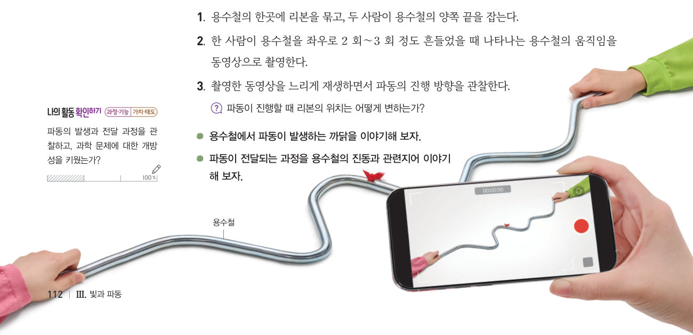
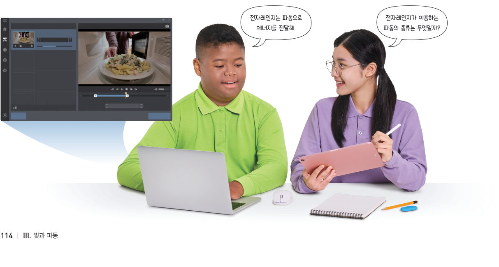
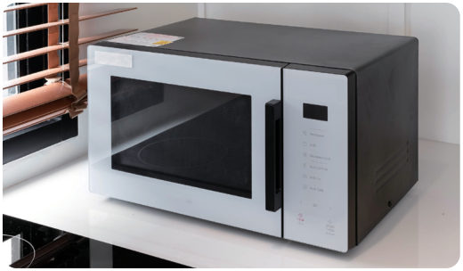
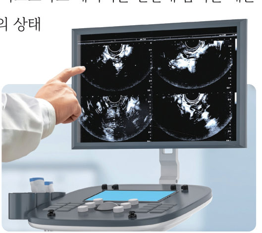

“지진이야. 조심해!” “멀리 떨어져 있어도 흔들리네.” 지진이 발생할 때 먼 곳에서도 흔들림이 느껴지는 까닭은 무엇일까? 가상 용수철을 흔들어 리본의 움직임을 느리게 관찰하고, 파장과 진폭을 재 보자.
🎯 이 단원을 배우면 — 파동의 발생과 전달 과정을 설명하고, 파동이 에너지와 정보를 전달하는 사례를 알 수 있다.
두 번째 블록동물의 울음소리를 분석하려면 소리의 어떤 특징을 비교해야 할까? 111쪽
“사자와 호랑이의 울음소리는 얼핏 비슷하게 들려. 그래서 사자와 호랑이의 울음소리를 구별해서 표현하려면 소리를 분석해야 해.” 이 단원의 힌트 조각을 모으면 파동의 일종인 소리의 특성을 이해하여 두 번째 블록 질문에 답할 수 있다.
이 단원과 관련해 이미 알고 있는 것에 표시해 보자.
해 보기 · 자료 변환·비교·분석·해석하기파동의 발생과 전달 과정 관찰하기 112쪽
연못에 물방울이 떨어지면 동심원 모양의 물결이 주위로 퍼져 나간다. 이처럼 한곳에서 만들어진 진동이 주위로 퍼져 나가는 것을 파동이라고 한다. 파동에는 물결파, 소리, 지진파, ●전자기파 등이 있다.
●전자기파 파동의 한 종류로 진공에서도 퍼져 나간다. 사람이 볼 수 있는 빛(가시광선)도 전자기파의 한 종류이며 마이크로파, 전파, 적외선 등도 전자기파이다.
용수철의 한곳에 리본을 묶고, 두 사람이 용수철의 양쪽 끝을 잡는다.
한 사람이 용수철을 좌우로 2 회~3 회 흔들었을 때 용수철의 움직임을 동영상으로 촬영한다.
동영상을 느리게 재생하면서 파동의 진행 방향을 관찰한다.

112쪽파동 실험용 용수철 · 리본 · 스마트 기기
가상 용수철흔들고 느리게 보기
[한 번 흔들기]나 [계속 흔들기]를 누르고 🎀 리본이 어떻게 움직이는지 보자. [느리게]로 바꾸면 슬로 모션이에요. 눈금(10 cm)으로 파장과 진폭도 재어 보자.
1파동이 진행할 때 리본은 . 손이 1초에 2번 흔들 때(진동수 2 Hz) 파장은 약 cm이다.
💬용수철에서 파동이 발생하는 까닭과 전달되는 과정을 용수철의 진동과 관련지어 이야기해 보자.
교과서매질과 파동의 요소 113쪽
용수철과 같이 파동을 전달하는 물질을 매질이라고 한다. 물결파의 매질은 물, 소리의 매질은 공기, 지진파의 매질은 땅이다. 물결파가 퍼져 나갈 때 물 위에 떠 있는 스타이로폼 구는 제자리에서 위아래로 진동만 한다. 이와 같이 파동이 전달될 때 매질은 제자리에서 진동할 뿐 진행 방향으로 이동하지는 않는다.
물결파에서 가장 높은 곳을 마루, 가장 낮은 곳을 골이라고 한다. 마루에서 이웃한 마루까지의 거리를 ●파장이라고 하고, 진동 중심에서 마루나 골까지의 거리를 진폭이라고 한다.
그림 3-14파동의 요소 — 마루, 골, 파장, 진폭, 진동 중심
물결파와 스타이로폼 구위에서 보기 · 옆에서 보기
1물결파의 매질은 , 소리의 매질은 , 지진파의 매질은 이다.
탐구 · 자료 수집하기파동을 이용한 에너지와 정보 전달 예 조사하기 114~115쪽
지진이 발생하면 지진파가 퍼져 나가면서 건물이 흔들린다. 이때 지진파를 분석하면 지진에 관한 정보를 얻을 수 있다. 이는 파동이 진행하면서 에너지와 정보를 전달하기 때문이다. 전자레인지는 전자기파의 한 종류인 마이크로파로 에너지를 전달해 음식을 데운다. 또 ●초음파 진단 장치는 초음파로 몸속의 상태에 대한 정보를 얻는다.

114쪽모둠별 조사 · 발표 자료 만들기

그림 3-15전자레인지

그림 3-15초음파 진단 장치
●초음파 진단 장치 초음파는 사람의 귀로 들을 수 있는 음파보다 진동수가 큰 파동이다. 초음파로 얻은 정보를 영상으로 바꾸어 보여 준다.
1파동의 이용 예를 분류해 보자.
전자레인지로 음식 데우기 (마이크로파)
초음파 진단 장치로 몸속 보기
휴대 전화로 통화하기 (전파)
초음파 세척기로 안경 닦기
리모컨으로 텔레비전 켜기 (적외선)
💬우리 모둠이 선택한 예에서 파동의 종류와, 파동이 전달하는 에너지나 정보를 이용하는 방법을 조사해 정리해 보자.
더 해 보기 · 파동을 이용해 정보 전달하기
빛, 소리, 진동 등을 이용해 우리 모둠만의 신호 규칙을 만들고, 멀리 떨어진 친구에게 신호를 보내 내용을 전달해 보자.
🧩 두 번째 블록 · 힌트 조각 1 (115쪽)
소리는 공기와 같은 매질로 에너지와 정보를 전달하는 ( )이다.
스스로 확인하기112쪽 학습 목표를 달성했는지 확인해 보자 115쪽
1개념 확인 한곳에서 만들어진 진동이 주위로 퍼져 나가는 것을 ( )(이)라고 한다.
2사고력 스피커를 진공 실험 장치에 넣고 음악을 틀면 소리가 들리다가 공기를 빼 진공으로 만들면 소리가 들리지 않는다. 그 까닭을 설명해 보자.
5분 테스트퍼져 나가는 파동
1한곳에서 만들어진 이 주위로 퍼져 나가는 것을 파동이라고 한다. 파동을 전달하는 물질을 이라고 한다.
✔옳으면 O, 옳지 않으면 X
⑴ 매질은 항상 파동이 진행하는 방향으로 이동한다.
⑵ 파동이 진행할 때 매질은 제자리에서 진동한다.
⑶ 용수철을 좌우로 흔들어 파동을 만들었을 때 용수철은 점점 옆으로 이동한다.
5물결파에서 가장 높은 곳을 , 가장 낮은 곳을 이라고 한다. 마루에서 이웃한 마루까지의 거리는 , 진동 중심에서 마루나 골까지의 거리는 이다. ⑦ 마루에서 다음 마루까지 10 cm인 파동의 파장은 cm, ⑧ 진폭이 5 cm일 때 진동 중심에서 골까지의 거리는 cm
⑨ 그림은 오른쪽으로 진행하는 파동의 한 순간이다(a, b는 마루, c는 골).
✔옳으면 O, 옳지 않으면 X
⑴ 파장은 0.4 m이다.
⑵ 진폭은 0.2 m이다.
⑶ 다음 순간 a에 있는 매질은 오른쪽으로 이동한다.
10전자레인지는 파동으로 를 전달하고, 소리는 파동으로 에너지와 를 전달한다.
스스로 정리하기파동의 발생과 전달 122쪽
1파동의 발생과 전달
⑴ 파동: 한곳에서 만들어진 진동이 을/를 통해 주위로 전달되는 것 ⑵ 마루에서 이웃한 마루까지의 거리: , 진동 중심에서 마루나 골까지의 거리: ⑶ 파동을 이용하여 과/와 정보를 전달할 수 있다.
평가 기준
스스로 평가
과정·기능 파동의 발생과 전달 과정을 관찰하고 설명했는가?
가치·태도 자료를 조사하고 산출물을 만들며 개방적인 태도로 협력했는가?
제출학생 정보 · 제출하기
모든 활동을 마친 뒤 제출하면 전체가 한 번에 채점되고 피드백이 나타나요. 답안은 선생님 스프레드시트(중2 탭)에 기록돼요.